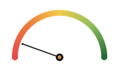

What It Measures
Overall crypto market sentiment on a 0–100 scale, from Extreme Fear to Extreme Greed.

Last updated NOV. 24, 2026 · 3:03 PM CT
Overall crypto market sentiment on a 0–100 scale, from Extreme Fear to Extreme Greed.
Pulled directly from Alternative.me's Crypto Fear & Greed Index, which blends volatility, market momentum and volume, social media activity, market dominance, and search trends into a single score. We don't calculate this ourselves — we display their published reading as of each issue.
0–24, Extreme Fear: investors are very worried and selling pressure is high. 25–49, Fear: caution outweighs confidence. 50, Neutral: neither side is in control. 51–74, Greed: buyers are confident and chasing gains. 75–100, Extreme Greed: optimism is stretched, so markets can be overheated. These are the bands Alternative.me publishes; they describe mood, not what price does next.
Extreme readings often — not always — line up with emotional turning points: extreme fear near local bottoms, extreme greed near local tops. It's a sentiment gauge, not a price prediction.
Alternative.me Crypto Fear & Greed Index (api.alternative.me/fng). Refreshed automatically every 15 minutes.
It is a 0 to 100 score of overall crypto market sentiment. Low numbers mean Extreme Fear, high numbers mean Extreme Greed, and the middle is Neutral. We show the reading published by Alternative.me and refresh it every 15 minutes.
It means traders are very cautious or selling. Some people treat extreme readings as a sign the mood has stretched, but the index is a snapshot of sentiment, not a forecast of where price goes next.
The underlying index updates daily. This page checks for a new reading every 15 minutes and keeps a history of recent readings below.
Refreshed automatically every 15 minutes: nothing here is backfilled or estimated.